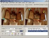
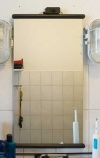
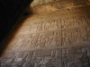

Correzione della prospettiva
Intro
Questa guida non ha alcun legame con la creazione dei panorami; comunque, la correzione della prospettiva, è un problema in qualche modo relativo alla produzione dei panorami, se le immagini di partenza sono state scattate inclinando la fotocamera verso l'alto o verso il basso. Si noti però che non è necessario correggere le immagini prima dell'assemblatura: ilprocesso avviene parallelamente ad allineamento e assemblatura.
Le linee pendenti possono essere fastidiose non solo nella fotografia architettonica. Anni fa i fotografi utilizzavano degli obiettivi con lenti spostabili (a volte definiti come obiettivi per la correzione della prospettiva) per correggere questo effetto. Questi obiettivi sono piuttosto costosi, non sono disponibili per tutte le lunghezze focali necessarie e sono limitati a una certa entità della correzione.
I Panotools sono in grado di simulare una lente spostabile in termini di geometria (ovviamente non possono simularla in termini di profondità di campo). Esistono alcune tecniche semplici e immediate per ottenere una correzione della prospettiva in funzione della direzione in cui è stata inclinata la fotocamera.
Prerequisiti
Questo esempio utilizza PTGui, ma è possibile ottenere gli stessi risultati con qualsiasi altra interfaccia grafica. L'utilizzo di questi programmi è pressoché identico anche se i nomi a volte possono essere differenti e alcuni campi sono in posizioni diverse. Per hugin, si consultino gli esempi sulla simulazione delle proiezioni architettoniche e sulla correzione della prospettiva.
In tutti i casi si avvia un progetto e si aggiungono le immagini che si desidera correggere premendo il pulsante aggiungi.
Andare nella linguetta dei parametri obiettivo e scegliere il tipo (presumibilmente normale (rettilineare)). Inserire il valore approssimativo del campo inquadrato se non è già stata letto automaticamente dai dati EXIF (non è necessario il valore esatto). Se si è già in possesso dei parametri di correzione dell'obiettivo, è possibile inserirli nei campi a, b e c oppure immettere 0,0 per ognuno.
Nella linguetta delle impostazioni panorama , si scelga rettilinear ("piatta") come output.
Le nuove versioni di PTGui manifestano alcuni comportamenti strani quando si utilizza l'ottimizzatore interno. Le opzioni nella linguetta dell'ottimizzatore possono venire occasionalmente disabilitate quando si effettuano delle correzioni di prospettiva. Utilizzare l'ottimizzatore dei Panorama Tools se si riscontrassero dei problemi.
Fotocamera inclinata verso l'alto o verso il basso
Utilizzando una lente spostabile questo scatto sarebbe avvenuto con la fotocamera livellata e la lente spostata verso l'alto o il basso. Il relativo parametro per la simulazione di questo effetto con i panotools, è l'inclinazione.
Fotocamera livellata con l'orizzonte
 |
Se la fotocamera era livellata con l'orizzonte, sono sufficienti un paio di punti di controllo verticali per correggere le linee cadenti. Andare sulla linguetta dei punti di controllo, selezionare un punto sulla sommità di un oggetto verticale nell'immagine nel riquadro di sinistra, e un punto all'estremità inferiore della stessa struttura verticale sull'immagine di destra. Questa struttura verticale non deve attraversare o passare vicina al centro dell'immagine. Assicurarsi infine di aver selezionato linea verticale come tipologia di punti di controllo.
Nella linguetta dell'ottimizzatore, abilitare interfaccia: avanzate. Abilitare inclinazione e usa punti di controllo di: per immagine 0. Tutti gli altri campi non sono abilitati. Premere poi avvia ottimizzatore e confermare il dialogo seguente.
Una volta terminato, procedere come descritto in correzione dell'output.
Nell'immagine di esempio è stato impostato un punto nella luce centrale sulla cima della torre, un altro all'incirca nel mezzo il più in basso possibile.
Cliccare sull'immagine per ingrandirla.
Fotocamera inclinata e ruotata
 | |
 |
Se la fotocamera è stata ruotata, sono necessari almeno due coppie di punti di controllo verticali per altrettante linee. Andare nella linguetta dei punti di controllo e individuare due coppie di punti su delle strutture verticali distanti fra loro. Per ognuna di essa si imposti un punto in basso in un riquadro, e in alto nell'altro riquadro relativamente alla stessa struttura verticale. Assicurarsi di aver impostato il tipo di punti a linea verticale.
Se non fosse presente una seconda linea verticale, è possibile utilizzarne una orizzontale con una coppia di punti di controllo orizzontali.
Per poter correggere la prospettiva e la rotazione dell'immagine, è necessario ottimizzare l'inclinazione e il rollio.
Nella linguetta dell'ottimizzatore selezionare interfaccia: avanzata, abilitare inclinazione, rollio e usa punti di controllo di: per l'immagine 0. Tutti gli altri campi sono disabilitati. Premere poi avvia ottimizzatore e confermare il dialogo che apparirà.
Una volta terminato, procedere come descritto in correzione dell'output.
Nell'immagine di esempio è stata scelta una coppia di punti in alto e in basso rispetto allo spigolo più spostato a sinistra dell'altare
e una allo spigolo più a destra.
Premere le immagini per ingrandirle.
Fotocamera decentrata
 |  |
Utilizzando un obiettivo spostabile questo scatto sarebbe avvenuto con la pellicola o il sensore parallelo al soggetto e la lente spostata verso destra o verso sinistra. Il relativo parametro che simula questo comportamento nei panotools è l'imbardata.
Non è sempre necessario correggere un'immagine scattata da una fotocamera decentrata da che l'occhio abituato alla distorsione orizzontale della prospettiva. Un utilizzo è quello, per esempio, di poter scattare una foto a uno specchio senza che la fotocamera venga ripresa.
Se la fotocamera era livellata con l'orizzonte, è sufficiente una coppia di punti di controllo orizzontali per correggere la distorsione orizzontale della prospettiva. Selezionare la linguetta dei punti di controllo e individuare un punto alla sinistra di una linea orizzontale nsull'immagine presente nel riquadro di sinistra e un punto sulla destra della stessa linea orizzontale nel riquadro di destra. Questo oggetto orizzontale non deve attraversare o avvicinarsi al centro dell'immagine. Assicurarsi di aver selezionato linea orizzontale come tipologia dei punti di controllo.
Nella linguetta dell'ottimizzatore selezionare interfaccia: avanzata. Abilitare imbardata e usa punti di controllo di: per l'immagine 0. Tutti gli altri campi sono disabilitati. Premere poi avvia ottimizzatore e confermare il dialogo seguente.
Una volta terminato, procedere come descritto in correzione dell'output.
In questo esempio è stata scelta una coppia di punti sul bordo superiore dello specchio rispettivamente all'estremità destra e sinistra. Cliccare sulle immagini per ingrandirle.
Fotocamera decentrata e ruotata
Se la fotocamera è stat ruotata durante lo scatto, saranno necessari almeno due coppie di punti di controllo orizzontali o una coppia orizzontale e una verticale.
Procedere in modo analogo all'esempio di fotocamera inclinata verso l'alto
Fotocamera decentrata, inclinata e ruotata
 |  |
Utilizzando un obiettivo spostabile (nell'ipotesi di trovarne una con una lunghezza focale sufficientemente corta) questo scatto sarebbe stato effettuato con la fotocamera livellata, la pellicola o il sensore paralleli al soggetto e la lente spostata diagonalmente. I rispettivi parametri per simulare questo comportamento con i panotools sono imbardata, inclinazione e rollio.
A volte si rende necessario scattare una foto in spazi angusti ma si vorrebbe poi mostrarla in vista frontale.
In questo caso sono necessarie due coppie verticali e due coppie orizzontali di punti di controllo. Selezionare la linguetta dei punti di controllo e individuare due coppie di punti a sinistra e a destra di un elemento orizzontale nell'immagine. Assicurarsi di selezionare linea orizzontale come tipologia di punti di controllo per questi due e di individuare le linee il più distante possibile fra loro.
Selezionare due coppie di punti in alto e in basso di una struttura verticale nell'immagine. Assicurarsi di impostare la tipologia di punti di controllo a linea verticale per queste due coppie. Le due linee dovrebbero essere, anch'esse, il più distante possibile fra loro. Non ci sono problemi se le linee orizzontali e verticali si incrociano.
Nella linguetta dell'ottimizzatore abilitare interfaccia: avanzata. Marcare imbardata, inclinazione, rollio ed eventualmente il campo inquadrato, e usa punti di controllo di: per l'immagine 0. In questo caso sarà probabilmente necessario ottimizzare anche il campo inquadrato, dato che l'ottimizzatore non troverà una soluzione valida se questo è sbagliato. Tutti gli altri campi sono disabilitati. Premere poi avvia ottimizzatore e confermare il dialogo seguente.
Una volta terminato, procedere come descritto in correzione dell'output.
Nell'immagine di esempio sono state scelte le linee verticali e orizzontali corrispondenti ai bordi delle lastre. Cliccare sulle immagini per ingrandirle.
È disponibile un ottimo esempio guidato su come correggere questa immagine con hugin: [1]
Ricapitolando
Sono necessari solo pochi punti di controllo per effettuare la correzione della distorsione della prospettiva.
- Fotocamera livellata. Correzione di:
- linee cadenti (distorsione verticale della prospettiva) - impostare una coppia su una struttura verticale fuori dal centro. Ottimizzare solamente l'inclinazione;
- distorsione orizzontale della prospettiva - impostare una coppia su una struttura orizzontale fuori dal centro. Ottimizzare solamente l'imbardata.
- Fotocamera ruotata. Correzione di:
- linee cadenti (distorsione verticale della prospettiva) - impostare almeno una coppia di punti di controllo verticali su una struttura verticale più o un ulteriore coppia verticale distante dall'altra, o una coppia orizzontale su una struttura orizzontale. Ottimizzare solamente l'inclinazione e il rollio;
- distorsione orizzontale della prospettiva - impostare almeno una coppia di punti di controllo orizzontali su una struttura orizzontale più o una ulteriore coppia orizzontale distante dalla precedente, o una coppia verticale su una struttura verticale. Ottimizzare solamente l'imbardata e il rollio.
- Fotocamera inclinata, decentrata e ruotata - impostare due coppie su due diverse strutture verticali lontane fra loro, e altre due coppie su due distinte linee orizzontali distanti reciprocamente. Ottimizzare imbardata, inclinazione, rollio e infine il campo inquadrato.
Correzione dell'output
In ogni caso si dovrebbe ottenere una distanza media dei punti di controllo pari a circa 0,0 e, in ogni caso, l'immagine verrà spostata in qualche direzione; quindi l'immagine finale sarà più grande. La larghezza e l'altezza dell'immagine di output possono essere modificate, ma non è possibile ritagliare separatamente ogni lato in PTGui.
Aprire Panorama Editor (Ctrl+E) e premere il pulsante adatta panorama (Ctrl+F o dal menu: Modifica -> adatta panorama). In questo modo verrà automaticamente individuata l'area di output che contiene l'immagine corretta.
L'immagine dovrebbe essere spostata lungo una direzione con lo spazio vuoto riempito di nero. L'altezza e la larghezza della cornice possono essere modificate utilizzando le barre di scorrimento in fondo e a destra della finestra (in pratica si corregge il campo inquadrato dell'immagine finale). Il rimanente spazio riempito in nero può essere ritagliato con un programma di foto ritocco.
Salvare
In ultimo, spostarsi sulla linguetta crea panorama e premere il pulsante imposta dimensioni ottimali. Scegliere il formato TIFF, JPG (e la qualità) o PNG come output e inserire il nome del file. Dovrebbe esserci un segno di spunta alla voce includi immagini. Premere quindi crea panorama.
Elaborazione in serie
Se si desidera elaborare in serie (batch) alcune immagini aventi le stesse dimensioni con gli stessi valori di correzione (possibile solamente se tutte le foto sono state scattate con l'ausilio di un treppiede e senza muovere la fotocamera), è sufficiente aggiungerle al progetto dalla linguetta delle immagini di partenza.
Per correggerle tutte con gli stessi valori di inclinazione e rollio (linee cadenti) è sufficiente abilitare l'opzione collegamento nella linguetta dell'ottimizzatore per entrambi i parametri.
Se si desidera corregerle tutte anche per l'imbardata, selezionare il campo imbardata nella linguetta dei parametri immagine e premere due volte la combinazione di tasti «Ctrl+C». Tenere poi premuto il tasto «shift» e utilizzare la freccia verso il basso fino a quando tutti i campi dell'imbardata sono stati selezionati. Premere «Ctrl+V» due volte per incollare il valore in tutti i campi dell'imbardata (lo stesso procedimento è valido anche per inclinazione e rollio)
Nella linguetta crea panorama selezionare TIFF multi immagine come output. Il file verrà salvato con il nome assegnata a cui verranno aggiunte 4 cifre nella parte finale.
--Erik Krause 18:38, 23 Luglio 2005 (EDT)